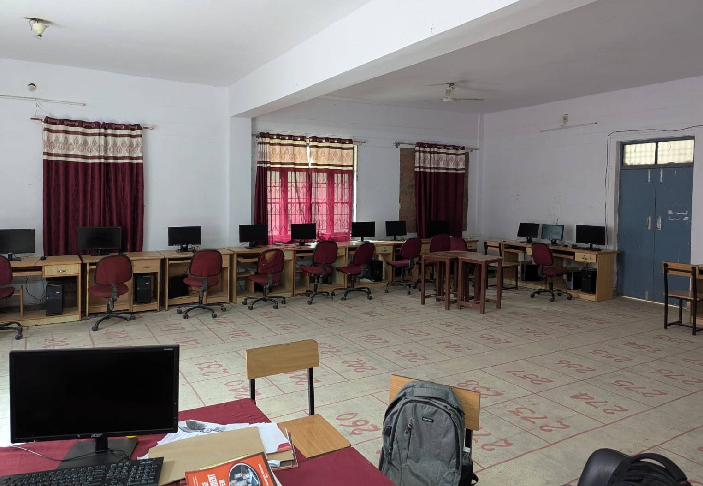

COMPUTER SCIENCE
The Computer Science and Engineering (CSE) branch at Government Polytechnic Chopan is designed to equip students with the technical knowledge, practical skills, and problem-solving abilities required in today’s digital world. The program blends core computing fundamentals with emerging technologies, ensuring that students are industry-ready and adaptable to future advancements. The curriculum covers a wide spectrum of subjects, including: Programming Languages (C, C++, Java, Python) Data Structures and Algorithms Database Management Systems Computer Networks and Operating Systems Software Engineering Web and Mobile Application Development Emerging Domains such as Artificial Intelligence, Cloud Computing, and Cybersecurity Students gain hands-on experience through well-equipped laboratories, project-based learning, and industrial training, enabling them to apply theoretical concepts in practical scenarios. The CSE branch emphasizes innovation, creativity, and analytical thinking, encouraging students to participate in coding competitions, and collaborative projects. Additionally, the department promotes soft skills, teamwork, and professional ethics to prepare students for successful careers. Students of the CSE program find opportunities in diverse fields, including software development, IT services, data analytics, networking, cybersecurity, and research, or may pursue higher studies to advance their expertise. By combining technical excellence with a focus on innovation and societal impact, the CSE branch at Government Polytechnic Chopan nurtures future-ready professionals for the rapidly evolving digital era.
LABORATORIES

The college has a well-equipped computer laboratory that provides students with hands-on experience and practical exposure to computing. The lab is furnished with modern computers, essential software, and all required tools to support the curriculum of diploma engineering courses. It offers a conducive learning environment where students can practice programming, learn applications, and strengthen their technical skills. The computer lab is regularly maintained to ensure smooth functioning and helps students bridge the gap between theoretical knowledge and practical implementation.
The college provides smart classrooms to make teaching and learning more effective and engaging. Equipped with modern teaching aids such as projectors, audio-visual systems, and interactive boards, these classrooms create a dynamic learning atmosphere. They help teachers explain complex topics more clearly and allow students to understand concepts with the support of visual presentations and demonstrations. Smart classrooms encourage active participation and make the overall learning process more interesting and result-oriented.

FACULTY

| Name | Mr. Sanjay Khanna |
|---|---|
| Designation | HOD, Lecturer |
| Qualifications | M.Sc, M.Phil, MCA |
| Department | Computer Science and Engineering |
| Area Of Specialization |

| Name | Dr. Vivek Srivastava |
|---|---|
| Designation | Lecturer |
| Qualifications | B.Tech, M.Tech, PhD |
| Department | Computer Science and Engineering |
| Area Of Specialization | Computer Network, Machine Learning |

| Name | Mr. Neeraj Dubey |
|---|---|
| Designation | Lecturer |
| Qualifications | B.Tech, M.Tech |
| Department | Computer Science and Engineering |
| Area Of Specialization | Computer Science |

| Name | Mr. Rizwan Ahmad |
|---|---|
| Designation | Lecturer |
| Qualifications | Diploma, B.Tech |
| Department | Computer Science and Engineering |
| Area Of Specialization | ML, Linux, Data Science, CyberSecurity |

| Name | Mr. Ajeet Kumar |
|---|---|
| Designation | Lecturer |
| Qualifications | B.Tech |
| Department | Computer Science and Engineering |
| Area Of Specialization | Computer Science |